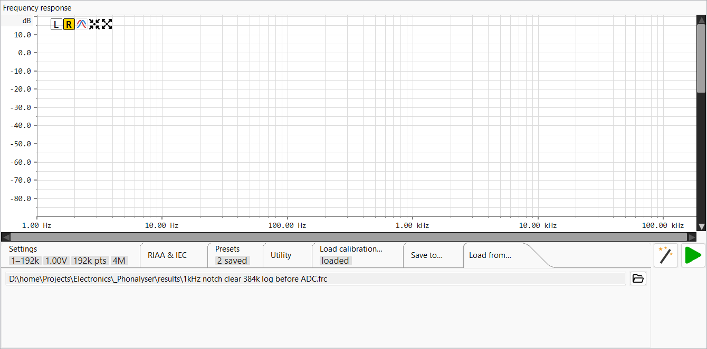

◀ Zurück zum Inhaltsverzeichnis
Diese Seite beschreibt die Bedienelemente des Frequenzgang-Analysators. Informationen zur Messmethode — ein vorgerenderter logarithmischer Sweep, der gegen die abgespielte Referenz entfaltet wird, um Betrag und Phase über das gesamte Band in einem Durchlauf zu ermitteln — finden Sie unter Funktionsprinzip ▸ Frequenzgang sowie in der Zusammenfassung zum logarithmischen Sweep (Farina).
Der Frequenzgang befindet sich auf einem eigenen Hauptreiter (neben dem kombinierten Generator-/Oszilloskop-/FFT-Reiter). Er gibt einen Sweep-Sinus über das Ausgabegerät aus, nimmt das Rücksignal am Eingang auf und stellt den gemessenen Betrag (und wahlweise die Phase) des Prüflings als Funktion der Frequenz dar — mit optionaler RIAA-/IEC-Referenzkurve sowie einer Differenzkurve (Messung minus Referenz) für Phono- und Filterarbeiten.

.frc-/
CSV-Korrekturdateien, um eine bekannte Schnittstellenantwort von der Messung
abzuziehen. Reiter Kalibrierung laden.Die Schaltflächenleiste befindet sich oberhalb der Darstellung.
| Schaltfläche | Funktion |
|---|---|
| L (cyan) | Zeigt den Betrag des linken Kanals. Schließt R aus — die Auswahl einer Option blendet die andere aus. |
| R (gelb) | Zeigt den Betrag des rechten Kanals. |
| Phase | Phasenkurve und die rechte ±180°-Achse ein-/ausblenden. |
| Auto-Setup | Passt das vertikale (Betrags-)Fenster an die sichtbare Kurve an und lässt etwas Abstand oberhalb des höchsten Punktes. Die Frequenzspanne wird nicht verändert. |
| Maximieren | Setzt auf die Standardansicht zurück — volle Frequenzspanne (1 Hz bis zur Nyquist-Grenze) und +20 … −150 dB vertikal. |
| Messwerte auslagern (Umschalter) | Verschiebt die Messwertanzeige (die Max-/Min-Werte des Vergleichs und die Unebenheits-Ebenheitszeile) aus der Ecke der Darstellung in ein kleines separates Fenster. Erneut klicken oder das Fenster schließen, um sie zurückzuholen. Ohne vorliegende Messung hat die Schaltfläche keine Wirkung. Siehe Messwertanzeige. |
| Assistent | Öffnet den geführten Kalibrierassistenten, der zuerst die DAC → ADC-Schleife und anschließend den zu prüfenden Filter nacheinander misst. (Diese Schaltfläche und Play befinden sich in der Werkzeugleiste neben den Einstellungsreitern, nicht in der Kopfleiste über der Darstellung.) |
| Play (grün) | Startet einen Mess-Sweep; während eines laufenden Sweeps ändert sich der Tooltip zu „Stopp" und ein Fortschrittsdialog erscheint (siehe Messung durchführen). |
Im Darstellungsbereich gilt: Rad: Betrag-(Vertikal-)Achse schwenken; Shift+Rad: Frequenz-(Horizontal-)Achse schwenken; Ctrl+Rad: Betragsachse zoomen (Rad nach oben = heranzoomen); Ctrl+Shift+Rad: Frequenzachse zoomen (Rad nach oben = heranzoomen). Beide Zoomfunktionen sind am Cursor verankert — der Wert (dB oder Frequenz) unter dem Zeiger bleibt beim Skalieren fixiert. Dies entspricht der Konvention in den Oszilloskop- und FFT-Ansichten. Jede Bildlaufleiste schwenkt nur eine Achse — kein Zoomen — und ihr Schieberegler wird durch die Ansicht dimensioniert, sodass er den Zoom widerspiegelt (er wächst/schrumpft beim Skalieren). Klicken Sie auf die leere Leistenbahn, um seitenweise zum Zeiger zu scrollen, oder halten Sie die Taste gedrückt, bis der Regler den Cursor erreicht.
Rechteck-Zoom. Ziehen Sie mit gedrückter linker Maustaste innerhalb der Darstellung ein Gummiband-Rechteck auf; beim Loslassen wird der ausgewählte Bereich auf die volle Ansicht gedehnt — Frequenz und Betrag zoomen in einer einzigen Geste gemeinsam. Auswahlen kleiner als 8 Pixel in einer der beiden Richtungen werden ignoriert, damit ein versehentlicher Klick nicht zoomt. Das Ziehen muss innerhalb des Darstellungsbereichs beginnen (nicht auf den Achsenbeschriftungen), und das Ergebnis bleibt auf die Grenzen der Darstellung beschränkt (horizontal 1 Hz bis zur Nyquist-Grenze). Dieselbe Geste funktioniert in den Oszilloskop- und FFT-Ansichten.
Ctrl+Z — Schritt zurück. Jeder Rechteck-Zoom merkt sich das Fenster, das er ersetzt hat; drücken Sie Ctrl+Z (genau Ctrl — Ctrl+Shift+Z und andere Kombinationen werden ignoriert), um bis zu 32 vorherige Fenster pro Ansicht zurückzugehen. Schwenken/Zoomen per Rad wird nicht aufgezeichnet — nur Rechteck-Zooms fügen Schritte hinzu. Ctrl+Z wirkt auf die Ansicht mit Tastaturfokus (klicken Sie in eine Darstellung, um sie zu fokussieren) oder, wenn keine Ansicht fokussiert ist, auf die unter dem Mauszeiger; die angesprochene Ansicht wird durch einen dünnen hellgrünen Rahmen an ihrem Rand markiert. Solange ein Texteingabefeld den Fokus hat, gehört Ctrl+Z der eigenen Rückgängig-Funktion dieses Feldes.
Wenn der Mauszeiger in den Darstellungsbereich bewegt wird, erscheinen ein
gestricheltes Kreuz und ein schwebender Kasten mit der Frequenz am Cursor
(begrenzt auf die Nyquist-Grenze), dem Betrag (dB) in Zeilerhöhe auf der
linken Achse (y = …), dem Betrag der L-/R-Kurve in dB,
der Phase in
Grad bei eingeblendeter Phasenkurve sowie dem Vergleichs-Δ im
Vergleichsmodus. Die Anzeige erlischt, wenn der Zeiger den Bereich verlässt.
Die Einstellungsleiste enthält neun Reiter, in dieser Reihenfolge:
Einstellungen,
RIAA & IEC,
Filter,
Unebenheit,
Voreinstellungen,
Werkzeuge,
Kalibrierung laden…,
Speichern unter… und
Laden aus…. Wie andernorts zeigt die Leiste ein
Überlauf-Symbol », wenn mehr Reiter vorhanden sind als angezeigt werden können.
Die Reiter Einstellungen, RIAA, Filter, Unebenheit, Kalibrierung und Voreinstellungen zeigen im
eingeklappten Zustand Kacheln mit den wichtigsten Werten (Werkzeuge, Speichern
und Laden haben keine); bewegen Sie den Mauszeiger über eine Kachel für einen
erläuternden Tooltip.
| Steuerelement | Hinweise |
|---|---|
| Startfrequenz, Hz | Untere Grenze des Sweeps. ≥ 1 Hz. |
| Stoppfrequenz, Hz | Obere Grenze des Sweeps, bis zur Nyquist-Grenze. |
| Amplitude (RMS) | Ausgangspegel zum DAC in Volt RMS bezogen auf die DAC-Kalibrierung; der Tooltip schaltet eine dBV-Anzeige um. Akzeptiert µV / mV / V / dBV. |
| FFT-Größe (Ds) | Analyselänge der Entfaltung als Zweierpotenz von 64k bis 16M. Längere Werte liefern feinere Frequenzauflösung und bessere Rauschunterdrückung auf Kosten einer längeren Sweep-Dauer; die Beschriftung zeigt die resultierende Sweep-Dauer. |
| Sweep-Punkte | Anzahl der logarithmisch verteilten Ausgabepunkte, die die Entfaltung liefert (8192 … 10M). Das Rad wechselt durch Zweierpotenz-Vorgaben (8192, 16384, 32768, … bis 4194304) sowie einen FS/2-Eintrag, der der halben aktuellen Abtastrate entspricht (24000 bei 48 kHz, 96000 bei 192 kHz — er folgt dem Audioformat); jeder Wert im gültigen Bereich kann auch direkt eingegeben werden. |
| Vorlauf, s | Stille-/Einregelzeit vor dem eigentlichen Sweep, damit der Signalweg im eingeschwungenen Zustand ist, wenn die Messung beginnt. |
| Dither | Dither-Tiefe für den generierten Sweep, Aus oder 1–31 Bit — dekorreliert den Quantisierungsfehler im abgespielten Signal. |

| Steuerelement | Hinweise |
|---|---|
| RIAA-Kurve anzeigen | Überblendung der RIAA-Referenz, ausgerichtet bei 1 kHz. Diese Option aktiviert die drei nachfolgenden Steuerelemente. |
| RIAA umkehren | Umschalten der Referenz zwischen Aufnahme- (Kodierung) und Wiedergabe- (Dekodierung) Kurve — wählen Sie die zum Prüfling passende. |
| IEC-Korrektur | Fügt den IEC-Tiefton-Hochpassfilter (~20 Hz) zur Referenz hinzu. |
| Vergleich (Messung − Referenz) | Stellt die geglättete Differenz zwischen Messung und RIAA-Referenz um eine 0-dB-Mittellinie dar und zoomt einmalig automatisch horizontal auf 20 Hz – 25 kHz, wobei sich das vertikale Fenster bis auf ±2 dB an die Extremwerte der Differenz anschmiegt. Erfordert eine vorhandene Messung. Ein blinkendes Banner zeigt die aktive Referenz an. |

Zeichnet den idealen Amplitudengang eines Lehrbuch-Analogfilters über den gemessenen Trace, sodass Sie auf einen Blick erkennen, wie nahe ein realer Filter (oder ein Filter, den Sie gerade aufbauen) an sein Ziel herankommt. Die Überlagerung ist eine violette gestrichelte Kurve; ein Vergleichsmodus kann zusätzlich die gemessene Kurve minus diesem Ideal darstellen. Es kann immer nur eine Referenz gleichzeitig angezeigt werden — das Einschalten dieser Überlagerung schaltet die RIAA-/IEC-Überlagerung aus und umgekehrt.
| Steuerelement | Hinweise |
|---|---|
| Filterkurve anzeigen | Zeichnet die ideale Filterantwort über den gemessenen Trace. Dies ist der Hauptschalter — jedes andere Steuerelement des Reiters bleibt inaktiv, bis er gesetzt ist. Er startet stets aus, wenn der Bereich geöffnet wird (anders als Filtertyp, Filterantwort, Auslegungswerte und Vergleichen, die alle gemerkt werden). |
| Vergleichen (gemessen − Filter) | Stellt die gemessene Antwort minus dem idealen Filter dar, geglättet und so zentriert, dass ihre Mitte bei 0 dB liegt, und zoomt automatisch auf die Differenz (siehe Vergleichen). Nur verfügbar, sobald eine Messung vorliegt — ein Versuch davor öffnet einen Hinweis, zuerst einen Sweep durchzuführen. |
| Filtertyp | Die Filterfamilie, deren idealer Gang gezeichnet wird: Tiefpass, Hochpass, Bandpass oder Bandsperre. Jeder Typ behält seinen eigenen vollständigen Satz an Auslegungswerten (siehe Speicher pro Typ). |
| Filterantwort | Die Approximation, die die Ebenheit des Durchlassbereichs und die Flankensteilheit formt, in Listenreihenfolge: Bessel, Butterworth, Tschebyscheff, Elliptisch und Inverser Tschebyscheff. Der Welligkeitswert im Durchlassbereich ist nur bei den drei Welligkeitsfamilien (Tschebyscheff, Elliptisch, Inverser Tschebyscheff) sinnvoll — und nur dort aktiv; Bessel und Butterworth haben keine einstellbare Welligkeit. |
Die Auslegungswerte liegen in einer umrandeten Gruppe Einstellungen. Ein Paar Optionsschalter wählt, wie der Filter angegeben wird; der Feldsatz darunter passt sich entsprechend an, ohne die Layoutgröße zu ändern:
Jeder Filtertyp merkt sich, welchen der beiden Modi Sie zuletzt für ihn verwendet haben.
Nach Spezifikation zeigt diese Felder (die mit Band/Bandsperre markierten erscheinen nur bei Bandpass und Bandsperre):
| Feld | Hinweise |
|---|---|
| Durchlasswelligkeit (R) | Spitze-Spitze-Welligkeit im Durchlassbereich in dB (0,001 … 200). Nur bei den Welligkeitsfamilien aktiv. Bei Inversem Tschebyscheff legt dieser Wert konventionsgemäß stattdessen die Sperrbereichswelligkeit fest, auch wenn die Beschriftung weiterhin Durchlassbereich lautet. |
| Sperrdämpfung (A) | Minimale Sperrbereichsdämpfung in dB, verwendet zur Ableitung der Ordnung. Bei einer Bandsperre legt sie zudem fest, wie tief die gezeichnete Kerbe geführt wird (siehe die Überlagerungskurve). |
| Mittenfrequenz (Fc) | Nur Band/Bandsperre — die Mittenfrequenz in Hz. |
| Durchlassbereichsgrenze | Beschriftet mit Durchlassbereich (Fc) bei Tief-/Hochpass und Durchlassbereich (PB) bei Bandpass / Bandsperre. Beim Tiefpass muss der Sperrbereich darüber liegen, beim Hochpass darunter. Beim Bandpass ist dies die innere Durchlassbandbreite, bei einer Bandsperre die äußere Rückkehrbandbreite. |
| Sperrbereichsgrenze | Beschriftet mit Sperrbereich (Fs) bei Tief-/Hochpass und Sperrbereich (SB) bei Bandpass / Bandsperre. Beim Bandpass muss die Sperrbandbreite breiter als die Durchlassbandbreite sein; bei einer Bandsperre muss die Sperrbandbreite schmaler als die Rückkehrbandbreite sein. |
Nach Ordnung zeigt diese Felder:
| Feld | Hinweise |
|---|---|
| Durchlassfrequenz | Die Grenzfrequenz bei Tief-/Hochpass oder die Mittenfrequenz bei Bandpass / Bandsperre, in Hz. |
| Welligkeit | Durchlasswelligkeit in dB — wiederum nur bei den Welligkeitsfamilien. |
| Ordnung | Die Filterordnung, eine ganze Zahl 1 … 20. Höhere Ordnungen ergeben eine steilere Flanke. |
| Q | Nur Band/Bandsperre — der Gütefaktor; die Bandbreite ist die Mittenfrequenz geteilt durch Q. |
Alle Frequenzfelder zeigen unterhalb von 1 kHz in Hz und darüber in kHz an, akzeptieren sowohl freie Eingabe als auch die Pfeil-/Rad-Schrittsteller und sind auf die Nyquist-Grenze begrenzt — die Grenze folgt dem Audioformat, wenn es sich ändert.
Jeder der vier Filtertypen behält seinen eigenen vollständigen Satz an Auslegungswerten und seine eigene Modusauswahl. Das Auswählen eines Typs lädt dessen Werte; das Bearbeiten eines Werts schreibt nur in den Satz des aktuellen Typs. All dies wird über Sitzungen hinweg gemerkt — Filtertyp, Filterantwort, Modus, die typbezogenen Werte und der Vergleichen-Schalter — mit der einzigen Ausnahme Filterkurve anzeigen, das stets aus beginnt.
Wenn Anzeigen eingeschaltet und die Auslegung gültig ist, wird der ideale Amplitudengang als violette gestrichelte Kurve in derselben Linienbreite wie der Trace gezeichnet — reiner Betrag in dB, Durchlassbereich bei etwa 0 dB, ohne Phase. Sie wird mit einem Punkt pro Bildschirmspalte abgetastet, wobei die exakte Grenz- (bzw. Kerb-)Frequenz erzwungen wird, damit dieser kritische Punkt stets korrekt dargestellt wird, egal wie breit die Darstellung ist.
Die Idealkurve ist nicht bei 1 kHz verankert (1 kHz kann tief im Sperrbereich liegen). Stattdessen wird sie an dem für jeden Typ maßgeblichen Punkt mit dem gemessenen Trace zur Deckung gebracht, sodass beide dort zusammentreffen, wo Sie die Übereinstimmung beurteilen würden:
Eine echte Kerbe ist unendlich tief, daher erhält die gezeichnete Spitze einen endlichen Boden: bei Nach Spezifikation reicht sie bis zur eingegebenen Sperrdämpfung (A) hinab; bei Nach Ordnung reicht sie bis zu festen 120 dB unter das Plateau. In beiden Fällen rundet die Spitze asymptotisch in diese Tiefe ab, statt einen flachen Boden zu zeigen.
Sind Filterkurve anzeigen und Vergleichen beide eingeschaltet und liegt eine Messung vor, zeigt die Darstellung die gemessene Antwort minus dem idealen Filter, Punkt für Punkt. Die Differenz wird geglättet und dann über 20 Hz – 25 kHz auf ihren Median zentriert, sodass ihre zentrale Tendenz 0 dB ergibt, und als durchgezogene Linie gezeichnet. Da hier der Filter die aktive Referenz ist, wird diese Vergleichskurve in Violett gezeichnet (die RIAA-Vergleichskurve ist dagegen dunkelgrün). Ihre Glättung ist dieselbe gemeinsame Einstellung, die auch der RIAA-Vergleich verwendet.
Eine kleine zweizeilige Tabelle oben links liest den Max- und Min-Wert der geglätteten Differenz über 20 Hz – 25 kHz ab. Das Betreten des Vergleichsmodus zoomt einmalig automatisch — horizontal auf 20 Hz – 25 kHz, vertikal bis auf ±2 dB an die Extremwerte der Differenz anschmiegend — danach bleibt jedes eigene Schwenken oder Zoomen erhalten. Die Kopfschaltfläche Auto-Setup passt ebenfalls an die Vergleichskurve an.

Reduziert den Frequenzgang auf eine einzige Ebenheitskennzahl und markiert sie in der Darstellung. Je nach Modus ist dies entweder das breiteste Band, das innerhalb einer Toleranz um einen Referenz-Höchstpunkt (oder eine Kerbe) bleibt, oder die Spitze-Spitze-Streuung des Frequenzgangs über einen gewählten Frequenzbereich.
| Steuerelement | Hinweise |
|---|---|
| Aus | Keine Ebenheitsanzeige — es wird nichts berechnet, tabelliert oder gezeichnet. Dies ist die Voreinstellung. |
| Unebenheit (dB-Feld) | Der Optionsschalter und sein dB-Feld in derselben Zeile. Sie legen eine zulässige Abweichung fest; die Analyse findet das breiteste Band um einen Referenz-Extremwert, in dem der Frequenzgang innerhalb dieser dB-Anzahl davon bleibt, und meldet die Bandgrenzen. Das dB-Feld nimmt 0,001 … 20 dB. |
| Bereich (Felder Start-/Stoppfrequenz) | Der mit Startfrequenz beschriftete Optionsschalter, mit Feldern für Start- und Stoppfrequenz. Die Analyse meldet die halbe Spitze-Spitze-Streuung des Frequenzgangs innerhalb dieses Bereichs. Das Bearbeiten einer Grenze begrenzt sie so, dass sie mindestens 1 Hz Abstand zur anderen hält; beide Grenzen sind auf die Nyquist-Grenze begrenzt. |
| Bandsperre | Lenkt die Analyse zu einer Senke statt zu einem Höchstpunkt (in beiden aktiven Modi verfügbar, siehe unten). |
Unebenheits-Modus. Mit Bandsperre aus findet die Analyse den Höchstpunkt innerhalb des Audiobandes (20 Hz – 20 kHz) und wandert in beide Richtungen nach außen, solange der Frequenzgang innerhalb Ihrer Toleranz unterhalb dieses Höchstpunkts bleibt — die Bandgrenzen liegen dort, wo der Frequenzgang erstmals so weit unter den Höchstpunkt fällt. Mit Bandsperre ein findet sie stattdessen den tiefsten Punkt und wandert nach außen, solange der Frequenzgang innerhalb der Toleranz oberhalb des Minimums bleibt — die Grenzen liegen dort, wo der Frequenzgang erstmals so weit über die Kerbe steigt. (Im Bandsperren-Modus wird die Kurve nur leicht entstört, nicht gemittelt, sodass eine scharfe, tiefe Kerbe ihre wahre Tiefe behält und die Markierungslinien auf dem gezeichneten Trace liegen.)
Bereichs-Modus. Die Analyse durchsucht den Frequenzgang zwischen Start und Stopp, findet den höchsten und den tiefsten Punkt und meldet die Hälfte der Streuung zwischen ihnen (das ±-Zeichen ist Teil der Anzeige). Das Häkchen Bandsperre wählt hier nur, auf welchem Extremum die Markierungslinie sitzt — dem tiefsten Punkt bei gesetztem Häkchen, dem höchsten sonst — es ändert die gemeldete Kennzahl nicht.
Während ein Modus aktiv ist und eine Messung vorliegt, wird die Analyse als gepunktete Linien in der Linienbreite der Überlagerung über die Darstellung gezeichnet:
Das Ergebnis wird als kurze Zeile geschrieben, angezeigt in einer kleinen umrandeten Tabelle unterhalb der Kopfschaltflächen (unter der Max-/Min-Tabelle des Vergleichs gestapelt, wenn beide vorhanden sind). Ihre Formulierung hängt vom Modus ab:
Dieselbe Kennzahl wird auf der Kachel des Reiters verdichtet, während die Leiste eingeklappt ist: „±x dB" im Unebenheits-Modus, das Start-Stopp-Paar im Bereichs-Modus oder „Aus". Die gesamte Anzeige kann auch mit der Kopfschaltfläche Messwerte auslagern in ein eigenes Fenster ausgelagert werden.

Speichern und Abrufen vollständiger Einstellungen- und RIAA-Konfigurationen.
| Steuerelement | Hinweise |
|---|---|
| Namensfeld (Kombinationsfeld) | Neuen Voreinstellungsnamen eingeben oder vorhandenen auswählen. |
| Speichern | Speichert die aktuellen Sweep- und RIAA-Einstellungen unter diesem Namen; ausgegraut, wenn die aktuellen Einstellungen bereits der gewählten Voreinstellung entsprechen. |
| Laden | Wendet die gewählte Voreinstellung auf den aktiven Bereich an. |
| Löschen | Entfernt die gewählte Voreinstellung (mit Bestätigung). |

| Schaltfläche | Funktion |
|---|---|
| Screenshot | Frequenzgang-Darstellung speichern oder kopieren. |
| DAC-Vollaussteuerung kalibrieren | Kalibrierungsassistent für den DAC-Referenzpegel (1 kHz / 1 V RMS). |
| ADC-Vollaussteuerung kalibrieren | Kalibrierungsassistent für den ADC-Referenzpegel (misst eine 1-kHz- Referenz am Eingang). |

Eine Liste von Kalibrierungszeilen. Jede geladene, mit Aktiv versehene
.frc-/CSV-Datei wird de-embedded (subtrahiert) von der Messung,
sodass die Darstellung den Prüfling mit entfernter bekannter Schnittstellenantwort
zeigt.
| Steuerelement (pro Zeile) | Hinweise |
|---|---|
| Pfad | Die geladene Datei oder „Keine Kalibrierung geladen". |
| Aktiv | Korrektur dieser Datei aktivieren/deaktivieren ohne sie zu entladen — deaktivierte Zeilen verbleiben in der Liste für eine schnelle Wiederverwendung. |
| Laden | Datei-Öffnen-Schaltfläche — wählt eine .frc- oder
CSV-Korrekturdatei für diese Zeile. |
| Löschen (×) | Entlädt die Datei dieser Zeile (behält den Aktiv-Status). |
| Hinzufügen (+) | Fügt eine weitere Zeile hinzu, um eine zweite Korrektur in Reihe zu schalten. |
| Entfernen (−) | Löscht diese Zeile. |

Speichert die aktuelle Messung als stereo CSV (Frequenz, L/R-Betrag in
dB, L/R-Phase in Grad). Die Datei zeichnet zudem die Abtastrate auf, mit der sie
gemessen wurde, sodass ein späteres Laden aus…
die korrekte Analysebandbreite kennt. Die Schaltfläche „Speichern" fragt stets nach
einem Pfad, vorausgefüllt mit einem zeitgestempelten
freqresp_….frc-Namen. Speichern ohne vorhandene Messung meldet
„Zuerst einen Sweep durchführen".
Auto-Reload: Wenn die gespeicherte Datei bereits als Kalibrierungszeile im FFT-Bereich oder in diesem Frequenzgang-Bereich geladen ist (siehe Kalibrierung laden…), wird diese Zeile unmittelbar nach dem Speichern automatisch neu eingelesen — ein erneutes Messen und Überschreiben einer Kalibrierung wird sofort wirksam, ohne erneutes Durchsuchen.

Lädt eine zuvor gespeicherte Stereo-CSV zurück in die Darstellung. Eine geladene Datei wird als bereits korrigiert behandelt (sie wird nicht neu kalibriert), und ein nicht blinkendes Banner zeigt ihren Pfad oben rechts in der Darstellung an.
Eine gespeicherte Datei zeichnet die Abtastrate auf, mit der sie gemessen wurde, und diese aufgezeichnete Rate — nicht die Rate des Live-Geräts — bestimmt die Analysebandbreite (die von der Fadenkreuz-Begrenzung und der Unebenheits-Analyse verwendete Nyquist-Frequenz). So wird eine mit hoher Abtastrate aufgenommene Datei über ihre volle Spanne analysiert, selbst wenn sie auf einem langsameren Gerät geöffnet wird. Nur eine ältere Datei, die keine aufgezeichnete Rate trägt, fällt auf die aktuelle Geräterate zurück.
Drücken Sie Play, um den Sweep zu starten. Aufnahme und Generator-Wiedergabe werden für den Lauf übernommen, ein modaler Fortschrittsdialog zeigt einen Live-RMS-gegen-Zeit-Pegel, und die Betrags- (und Phasen-)Darstellung aktualisiert sich nach Abschluss der Entfaltung. Die Gesamtdauer entspricht dem Vorlauf zuzüglich der durch FFT-Größe und Abtastrate bestimmten Sweep-Dauer. Da die Referenz der exakt vorgerenderte Sweep ist, der abgespielt wurde, ergibt sich die wahre Übertragungsfunktion des Prüflings, keine Schätzung — siehe Funktionsprinzip ▸ Frequenzgang.
Zwei kleine Anzeigen können über der Darstellung erscheinen, sobald eine Messung vorliegt:
Beide sitzen in der Ecke der Darstellung unterhalb der Kopfschaltflächen. Die Kopfschaltfläche Messwerte auslagern hebt sie in ein kleines separates Fenster (mit dem Titel „Messungen") oben rechts im Bereich; klicken Sie die Schaltfläche erneut oder schließen Sie das Fenster, um sie zurückzuholen. Die Schaltfläche tut nichts, solange keine Messung anzuzeigen ist, und der ausgelagerte Zustand wird beim Neustart auf angedockt zurückgesetzt.